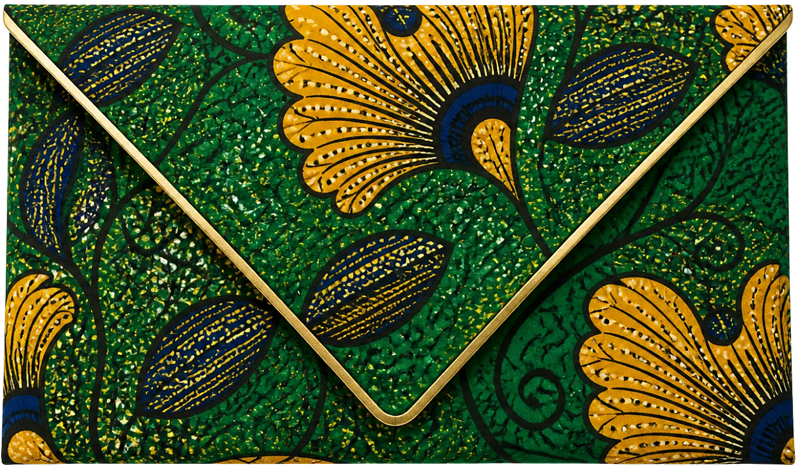

MariageMerveille&Olivier10 · 07 · 2027
MariageMerveille&Olivier10 · 07 · 2027


Le programme
Samedi 10 juillet 2027
 15 h 00Libala : échange des consentements
15 h 00Libala : échange des consentements 16 h 00Photos des deux familles en pagne
16 h 00Photos des deux familles en pagne 17 h 00Cocktail au bord du fleuve
17 h 00Cocktail au bord du fleuve 19 h 00Dîner parmi les fleurs
19 h 00Dîner parmi les fleurs 21 h 00Première danse sur une rumba
21 h 00Première danse sur une rumba 23 h 00Gâteau des mariés
23 h 00Gâteau des mariés
Le lieu

Terrasse du Fleuve
Kinshasa

Tenue
Couleurs du pagne
Émeraude, safran, indigo, corail. Chaque famille portera son pagne ; un tissu wax est le bienvenu pour les invités qui le souhaitent, sans aucune obligation.

Il reste
--jours
--heures
--minutes
Votre réponse
Merci de répondre avant le 1er juin 2027.
Je serai présent·eJe ne pourrai pas venir